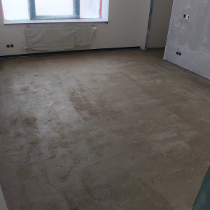

.................................................. ...................................................... .....................................................
 Грунто́вка — состав, наносимый первым слоем на подготовленную к окраске или отделке поверхность для создания надёжного сцепления верхних (кроющих) слоёв покрытия с обрабатываемой поверхностью и выравнивания её впитывающей способности. От окрашивающих составов грунтовки отличаются меньшим содержанием пигментов, а также наличием специального компонента — основы. Грунтовкой называют также грунтование — процесс нанесения этого состава. Грунтовки готовят на основе природных или синтетических, жидких или твёрдых плёнкообразующих веществ — олиф, алкидных смол, мочевино-формальдегидных смол, эпоксидных смол и др.; твёрдые плёнкообразующие материалы применяют в виде концентрированных растворов или дисперсий в органических растворителях или в воде. Многие грунтовки содержат в своём составе пигменты (железный или свинцовый сурик, цинковый крон), а иногда и наполнители (тальк, слюда, мел). На окрашиваемую поверхность грунтовку наносят шпателем, кистью, распылением и другими способами. Кроме того, грунтовки могут выполнять и другие функции: защищать металл от коррозии, «выявлять» текстуру дерева, перекрывать поры и другие дефекты окрашиваемой поверхности, а также обеспечивать адгезионное сцепление в системах антикоррозионной защиты металла, дерева и бетона (см. наливной пол), также защита поверхностей от плесени и грибка..Грунтовки под паркетный клей используют как на бетонное основание (стяжка или ровнитель), так и на деревянное основание (фанера, черновой пол). Грунтовки выполняют следующие функции: регулируют впитываемость основания; обеспечивают повышенное сцепление с основой; связывают пыль, которая неизбежна в ходе любого ремонта; укрепляют основание, особенно это важно в краевых зонах помещений. Выбор типа грунтовок зависит от используемого паркетного клея: для дисперсионного паркетного клея необходима грунтовка на основе дисперсий; для полиуретанового клея — полиуретановый грунт; для обеспечения гидроизоляции лучше использовать двухкомпонентный эпоксидный грунт.